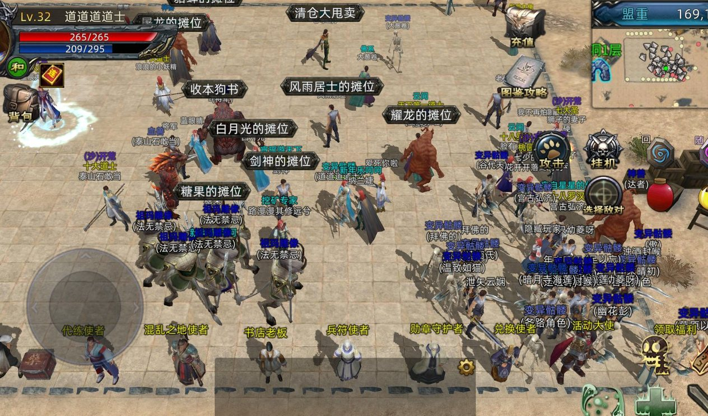
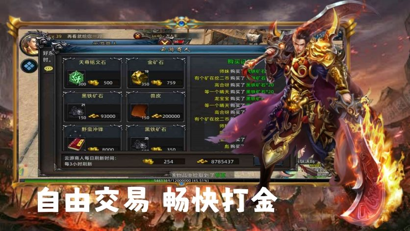
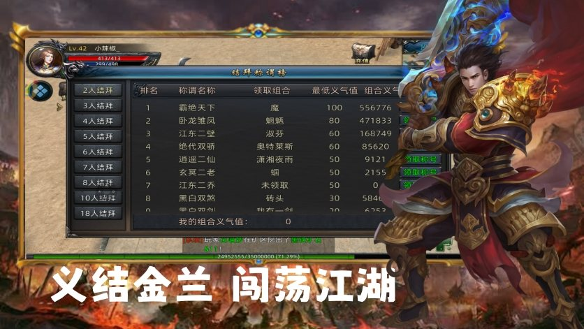
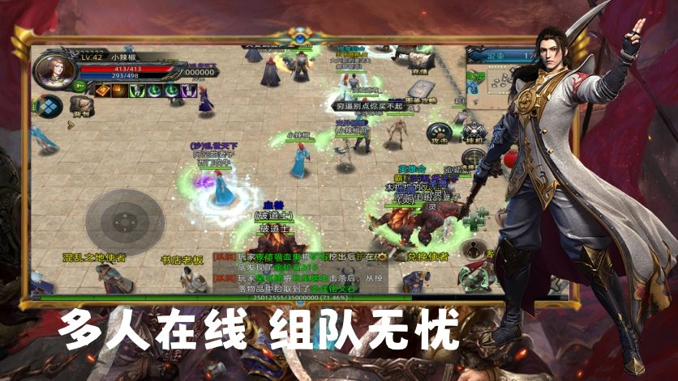
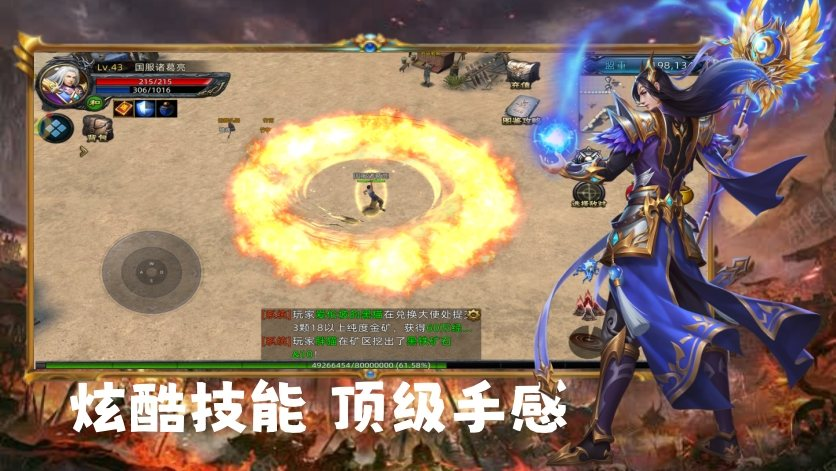

点卡计时 · 1.76 复古
传奇盛世移动版-3D点卡
《传奇盛世移动版-3D点卡》：1 元 = 10 点卡 = 60 分钟，离线同样计时——钱买的是「玩多久」而不是「有多强」。金币行由玩家定价、非绑定装备死亡掉落、掉落概率全公开，晚进服还能免费补到「世界等级 - 3」。
计费1 元 = 10 点卡 = 60 分钟 · 离线计入
职业战士 / 法师 / 道士
交易金币行玩家定价 · 收币方 5% 金币税
获取游戏 · 开服咨询传奇盛世移动版-3D点卡下载
传奇盛世移动版-3D点卡 · 全部 6 篇
点卡计费与成本账、金币行交易门槛、装备掉落与材料用途、战法道分工、新手开荒六步、等级补领。开区与版本更新后按实际内容持续补充。
传01新手开荒六步走：15 级转土城官网把开荒写成六步，核心是两件事：上线先看时长，别一上来把点卡烧光；15 级自动传送土城，转场前把新手区的活干完。阅读约 2 分钟 · 3 节 · 更新于 2026-11-15传02点卡换算：1 元 = 60 分钟这个服务器钱买的是「玩多久」，不是「有多强」。把换算和离线计费两条规则吃透，成本账就清楚了。阅读约 2 分钟 · 3 节 · 更新于 2026-11-15传03金币行交易门槛与 5% 金币税金币价格由玩家挂单写出来，收币方承担 5% 金币税。两道交易门槛是为了过滤批量小号，不是拦你做生意。阅读约 2 分钟 · 3 节 · 更新于 2026-11-15传04掉落全公开：装备会掉，材料才有用非绑定装备遵循死亡掉落规则，书页、黑铁、兽皮、祝福油全有明确用途。所有地图与怪物的掉落明细与概率公开可查。阅读约 2 分钟 · 3 节 · 更新于 2026-11-15传05战法道三职业分工：前排、清场与续航创建界面只有三个职业可选。官网口径：战士顶前排、法师清场、道士续航与控场，组队配合比充值额度重要。阅读约 2 分钟 · 3 节 · 更新于 2026-11-15传06后进服追赶：等级补领与世界等级担心开服一个月后再进只能当观众？官网写了等级补领：满足条件的角色可以免费补到「世界等级 - 3」。阅读约 2 分钟 · 3 节 · 更新于 2026-11-15
《传奇盛世移动版-3D点卡》为安徽游昕网络官方运营的正版移动网络游戏，计费与交易规则以游戏内公示为准；本站攻略基于官网公开资料整理。
游戏特色






